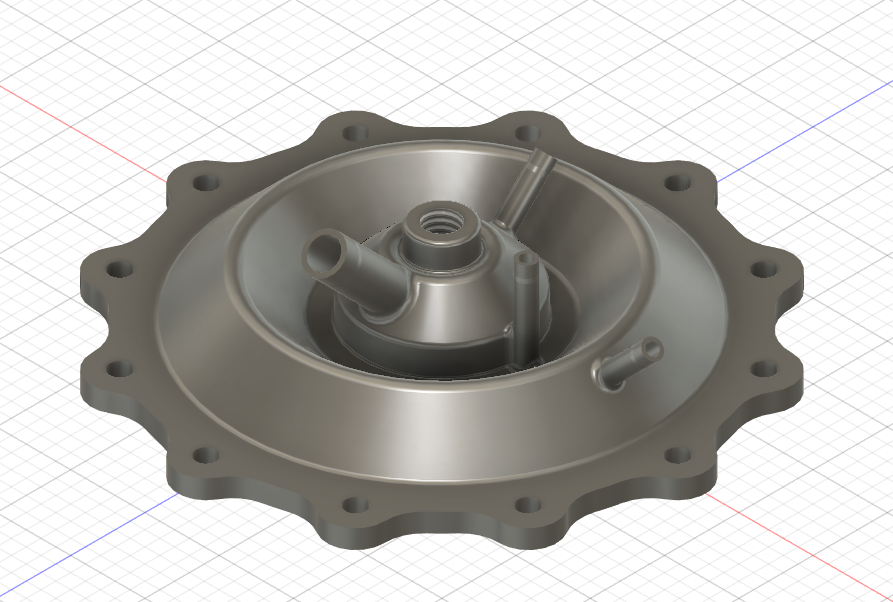
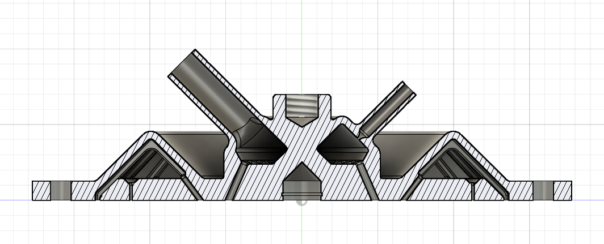

Additively Manufactured Rocket Engine Injector
A design effort for SRL’s first additively manufactured liquid rocket engine injector, taken from initial requirements through injector sizing and manufacturing readiness review.
- Combined high-pressure systems, injector orifice design, and fluid dynamics to translate engine requirements into injector geometry.
- Applied additive-manufacturing constraints and design-for-manufacturing considerations to the component architecture.
- Used FEM analysis alongside analytical engineering work to evaluate the design before review.
- Carried the design through manufacturing readiness review (MRR) toward a manufacturable, test-ready component.

